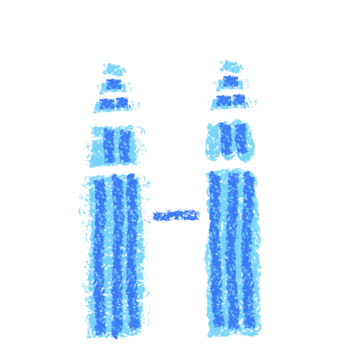
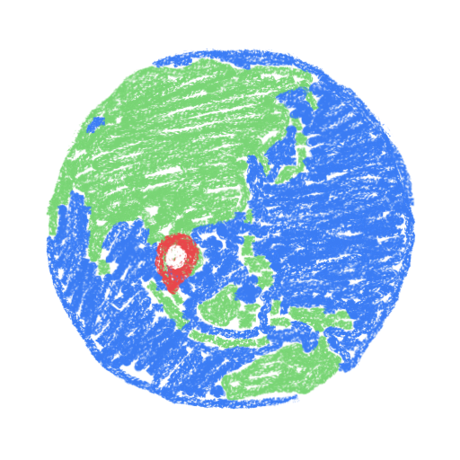
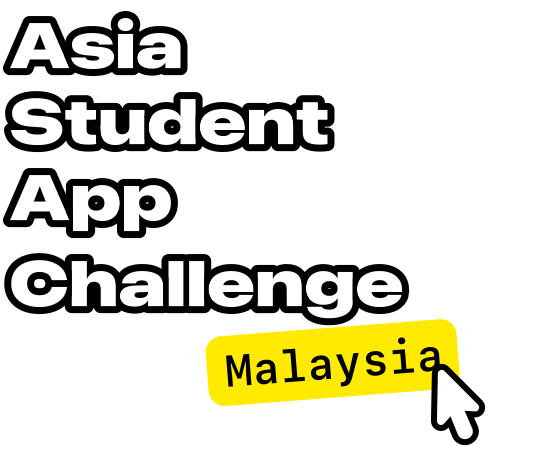
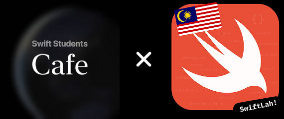

Kuala Lumpur
Malaysia



Nov 2026 – Jan 2027 • An initiative by Swift Students Cafe & SwiftLah! Community.
Build an app — individually with Xcode or Swift Playground — that can be experienced in 3 minutes, without the use of internet, that demonstrates excellence in innovation, creativity, social impact, or inclusivity. The project's zip file has to be under 25 MB.
All participants will receive feedback on how they can take their projects further; Winners will receive an exclusive pin, along with special gifts.
No prior experience is required.
This challenge is open to students and recent graduates in Malaysia who meet one of the following requirements:
No prior technical or design experience is required to participate.
You will need either a Mac or iPad capable of running Xcode or Swift Playground to participate. Device loans may be available through STDCx, subject to availability and loan requirements.
Until Nov 9
We're looking for participants who are interested in learning something new, trying something out, and building apps! No prior experience required. Selected participants will be notified by Nov 10.
Nov 11
Join us at Setia City Convention Centre, Setia Alam for a official launch event.
Required for all participants.
Nov 13 – Jan 8
Workshops and mentorship sessions at Selangor Technical Skills Development Centre (STDCx), Shah Alam where you will be able to work on your projects, loan devices, and get feedback.
Jan 9 – Jan 13
Submit your working project and a five-minute presentation video.
Jan 25
After judging, finalists will be announced.
Jan 30
Finalists present their projects in person at STDCx, followed by the winner announcement and celebration.
Join the event from your city.
Malaysia

Taiwan
Japan
Philippines
This event is organised by the Swift Students Cafe community, in collaboration with local Apple Developer communities. Swift Students Cafe is a community Swift Student Challenge winners and student community leaders from all over Asia.
Learn more about the Malaysian Apple Developer community, SwiftLah! Community.

The Malaysia edition is co-organised by SwiftLah! Community and Selangor Technical Skills Development Centre Shah Alam (STDCx).
For any questions, contact us at info@swiftlah.com.